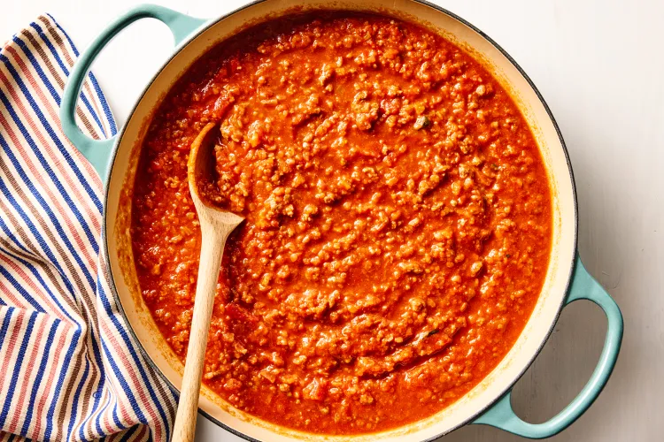

A beautiful slow-cooked and flavourful meat sauce that combines the acidity of tomatoes, the richness of fat from beef and cream with the sweetness of onions and carrots to deliver a fully balanced flavour profile to any pasta
This can be enjoyed same day or best enjoyed after 3 days of resting for full flavour